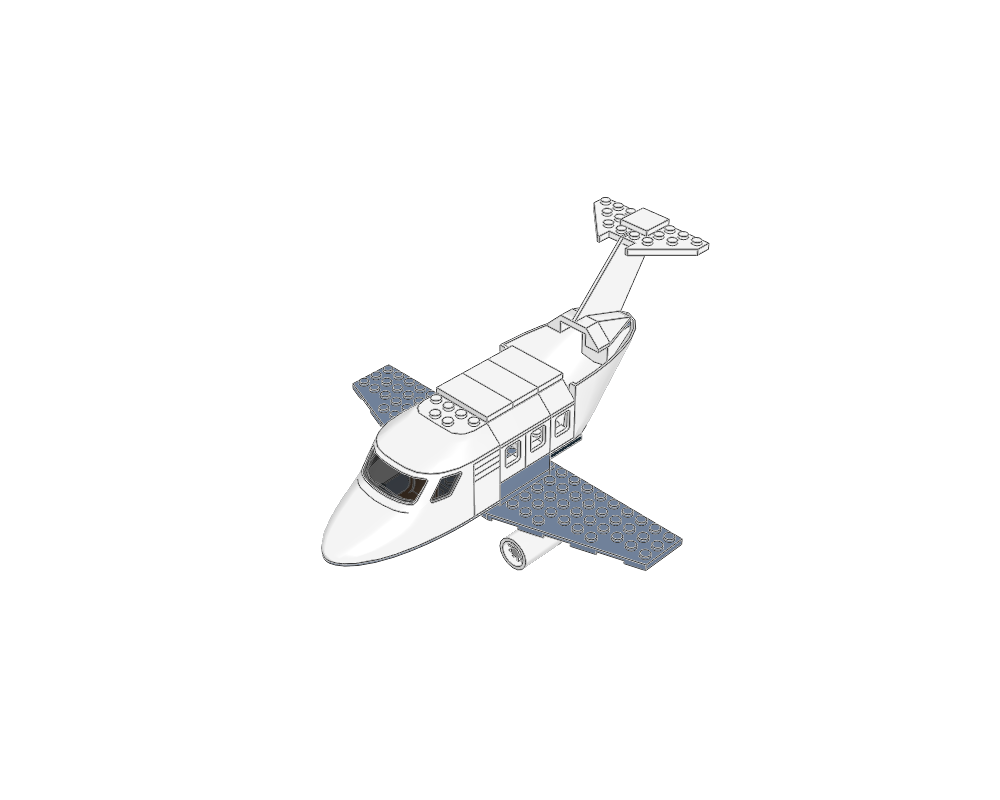
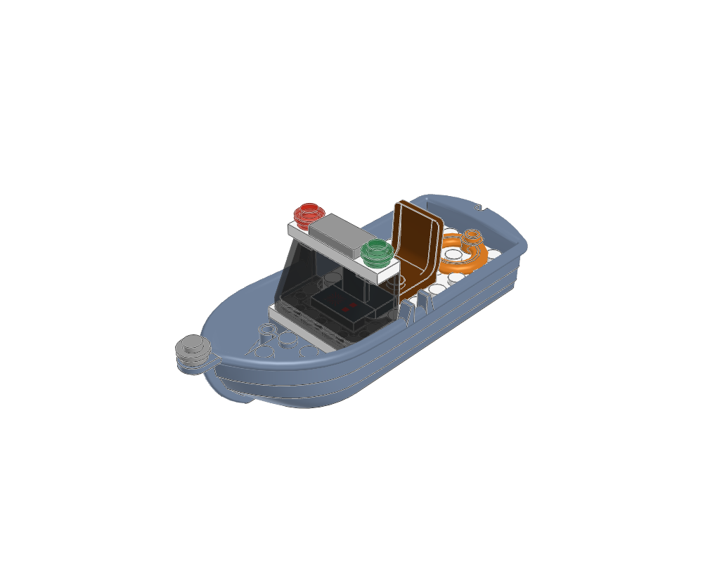
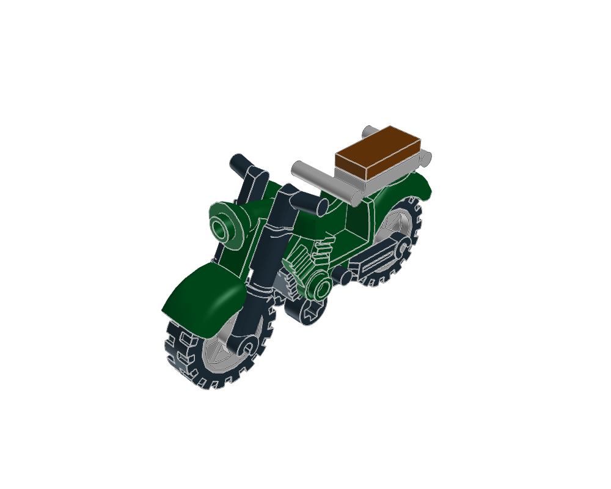
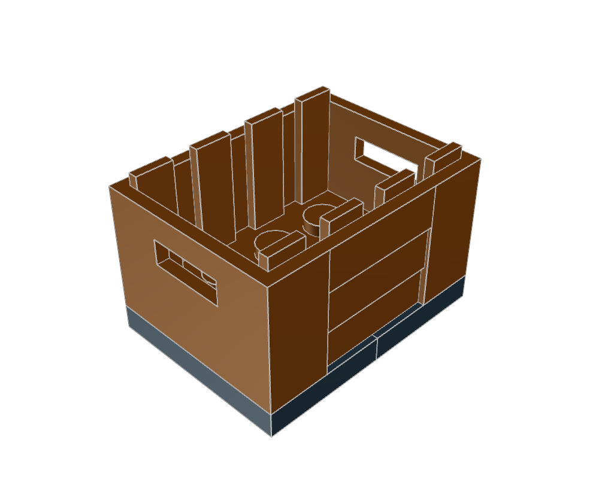
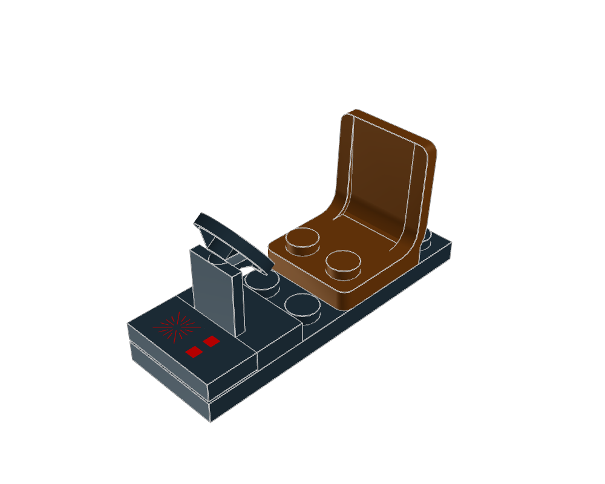
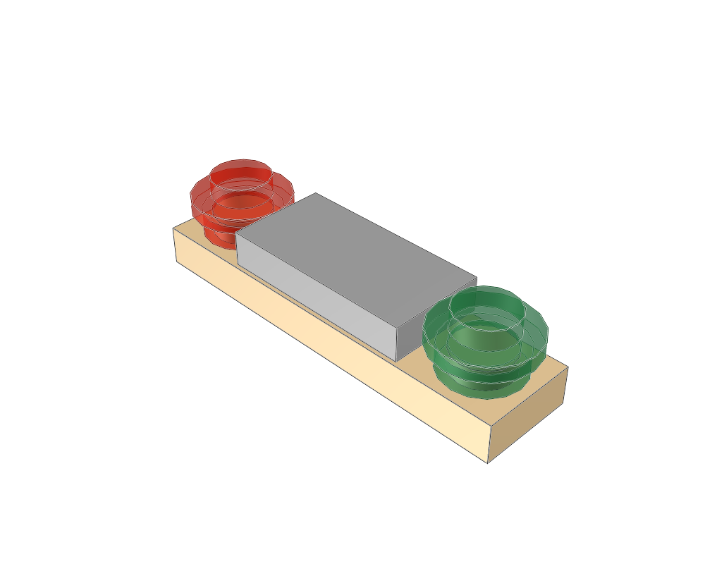
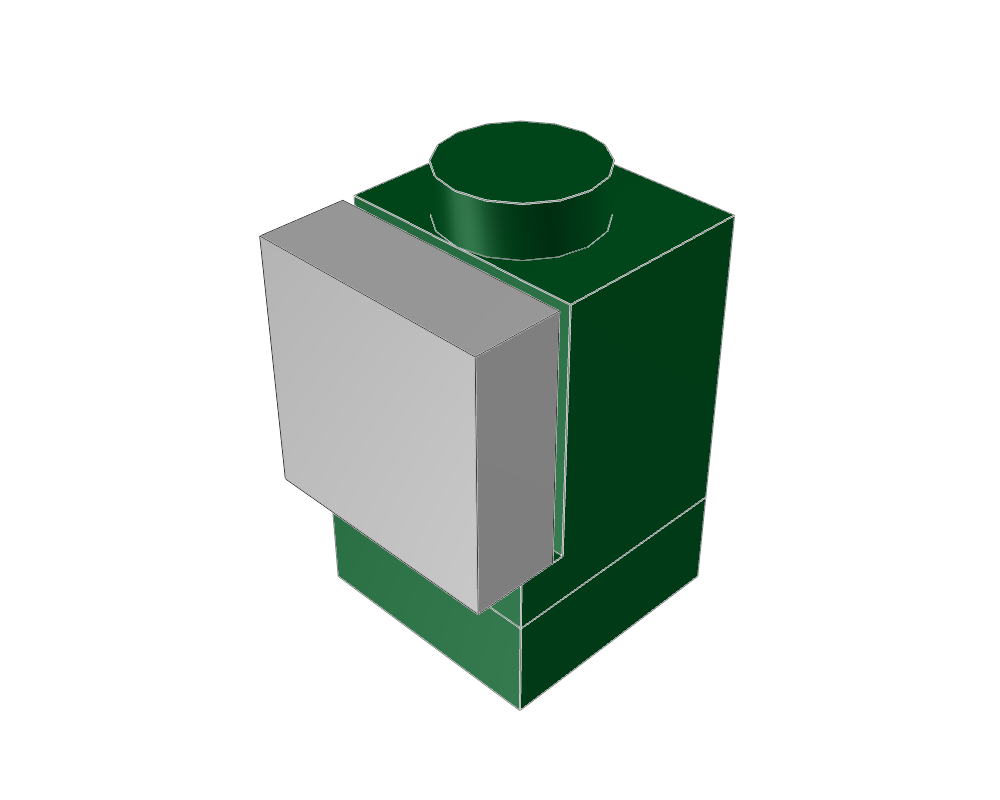

vehicle construction lessons
Generated from package READMEs. Inspiration, held, diagnostic and retired sources require explicit knowledge search scopes.

Narrowly as compact aircraft assembled from matched nose/glazing, body panels, wings, tail and underwing engines. Large purpose-made elements dominate the shape; exclude as universal aircraft default. No landing gear is present. Repeated engine child reviewed in both wing placements. Fresh see-through home/top views confirm the enclosed seat, controls and instrument panel; no missing-cockpit defect.
Static visual evidence only unless the linked package records specific further checks. Search eligibility does not certify fit, motion or strength.

Narrowly as moulded-hull open launch with helm, windscreen, lights and lifebuoy. No propulsion mechanism or complex hull-building lesson. Light crossbar reviewed separately and mounted across windscreen.
Static visual evidence only unless the linked package records specific further checks. Search eligibility does not certify fit, motion or strength.

Narrowly as purpose-made motorcycle-part composition: moulded frame/fairing, spoked wheels and rear luggage tray. Good recognizable silhouette, but not a general brick-built vehicle or steering-mechanism lesson.
Static visual evidence only unless the linked package records specific further checks. Search eligibility does not certify fit, motion or strength.

Purpose-made open crate and supporting pallet as fitting snippet. Odd-width placement lattice must be stated; no detailed brick-built cargo-body lesson.
Static visual evidence only unless the linked package records specific further checks. Search eligibility does not certify fit, motion or strength.

Small seat/steering-stand/dashboard layout on two-by-six floor. Explicitly reserve seat-back and canopy space. This is an interior fitting, not a complete vehicle starter.
Static visual evidence only unless the linked package records specific further checks. Search eligibility does not certify fit, motion or strength.

Purpose-made engine housing/internal core fitting, with top stud attachment. Source courier jet supplies underside wing sockets. Preserve intake direction and clearance below wing; this is not a brick-built turbine construction.
Static visual evidence only unless the linked package records specific further checks. Search eligibility does not certify fit, motion or strength.

Red/green round lights on short plate crossbar as fitting snippet. Source launch shows use across windscreen. Preserve documented forward direction and colour sides.
Static visual evidence only unless the linked package records specific further checks. Search eligibility does not certify fit, motion or strength.

Small seat/control-stick/instrument-slope layout on two-by-eight floor. Stick in one upright pose; cockpit envelope and canopy must be provided by parent.
Static visual evidence only unless the linked package records specific further checks. Search eligibility does not certify fit, motion or strength.

Tiny headlight-brick side-stud tile lesson as fitting snippet. Show mounting orientation and outward-facing mirrored use; no standalone assembly package required if grouped with fittings.
Static visual evidence only unless the linked package records specific further checks. Search eligibility does not certify fit, motion or strength.